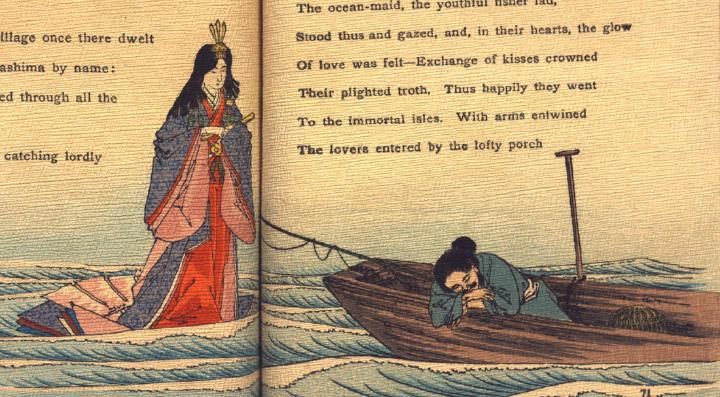

眠る浦島太郎の側に現れた乙姫。女房装束と冠を身に着け、扇子を片手に持ち、水面に浮ぶように立って、傍らの浦島太郎を眺めている。浦島太郎は釣竿を立てたまま、船にもたれて眠っている。
著作者：A.Lloyd／出典：親書誌：U426_nichibunken_0105：Poetical greetings from the Far East／日付：2006／資源識別子：U426_nichibunken_0105_0002_0000
Copyright (c)2010- International Research Center for Japanese Studies, Kyoto, Japan. All rights reserved.